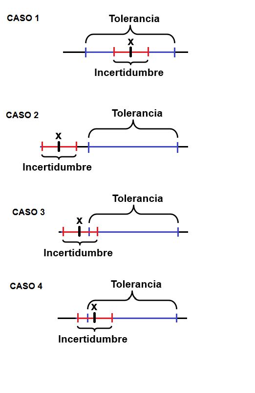
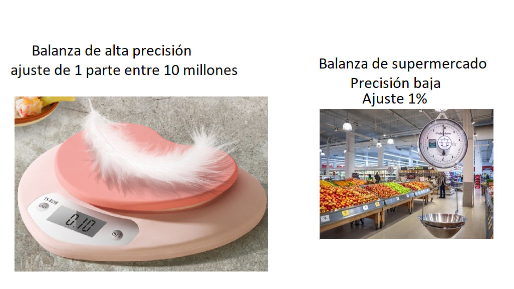

Métodos de medición y estimación de la incertidumbre
Fundamentos de medición

La ciencia estadística busca reducir el error, resultante de una estimación con su valor verdadero, con el objeto de tener valoraciones confiables como por ejemplo:
En economía predecir el precio futuro de una divisa o acción
Predecir la temperatura de un día
En la vida cotidiana, nos interesan muchas medidas como:
El tiempo que debemos hervir un huevo
El límite máximo de velocidad
El peso del equipaje permitido en un avión
El número de galones con que se tanquea el carro
La metrología es la ciencia que se ocupa de mantener y aumentar la precisión de las mediciones, en cualquier campo, por ejemplo
Obtener una estimación fiable de niveles traza de contaminantes alimentarios como el mercurio en el pescado
En el campo de la medicina tener mediciones de la presión arterial para el diagnostico de enfermedades.
Una medición cuidadosa puede significar, que una teoría aceptada necesita revisión o que se requiere un nuevo diseño en algún componente crítico de una aeronave.Tipos de metrología
Legal
Se relaciona con las actividades que se derivan de los requisitos legales que se aplican a la medición, las unidades de medida, los instrumentos de medida y los métodos de medida que se llevan a cabo por los organismos competentes.
Científica
se encarga de la custodia, mantenimiento y trazabilidad de los patrones, así como la investigación y desarrollo de nuevas técnicas de medición, de acuerdo al estado del arte de la ciencia.
Dentro de sus funciones se encuentra
Determinaciones de las constantes físicas fundamentales
Caracterísiticas de los fenomenos
Busca mejorar sistemas de medición para lograr un control cada vez más rápido y más confiable de la mano con el sistema de medidas internacionales SI
Técnica o industrial
Comprende todas las actividades metrológicas que necesita la industria para cumplir con sus tareas como:
– La información sobre mediciones.
– Las calibraciones.
– La trazabilidad.
– El servicio de calibración.
– El aseguramiento de la calidad.
Normas metrológicas
| Abreviatura | significado | autor |
|---|---|---|
| VIM | Vocabulario internacional de metrología | JCGM* Comité Conjunto para las Guías en Metrología (JCGM por sus siglas en inglés), |
| GUM | guia para la expresión de la incertidumbre de las medidas | ISO |
| IS | Sistema Internacional de Unidades | 4% |
| ICONTEC | ||
| NTC 10012 (2003) | Gestión de las mediciones | |
| IS | sistema internacional de las medidas | |
| Icontec | sistema internacional de las medidas | |
| ONAC | sistema internacional de las medidas | |
| Norma 17095 | sistema internacional de las medidas | |
| ISO | organización internacional de estandarización - International Standardisation Organisation) |
*BIPM, IEC, IFCC, ILAC, ISO, IUPAC, IUPAP y OIML
Incertidumbre y tolerancia en las medidas
Las medidas llevan asociado un error desconocido; al que se le asigna una cota superior, llamada incertidumbre.
\[medida ± incertidumbre \]
Incertidumbre
Parámetro asociado al resultado de una medición que caracteriza la dispersión de los valores que podrían ser atribuidos al mensurando, (ISP, 2010)
Es el intervalo de los valores posibles de una medida.
Tolerancia (de una magnitud)
Es el intervalo de valores en el que debe encontrarse una magnitud para que se acepte como válida.

\[Intervalo \quad toleracia \geq error+incertidumbre\]
Mensurando: Cantidad destinada a la medida. (VIM)
Ejemplo
En un experimento se ha medido la gravedad, obteniendo como resultado \((9,51 ± 0,45) m/s^2\), esto da a entender que:
no se puede asegurar que el valor de la gravedad sea \(9,51 m/s^2\)
se puede afirmar que hay un margen de error de \(0,45 m/s^2\), ya sea por exceso o por defecto.
Las mediciones precisas garantizan la confiabilidad de los procesos, sin embargo la precisión depende del contexto

Exactitud de medida
¿Que tan cercano esta al valor verdadero?
Proximidad entre un valor medido y un valor verdadero de un mensurando
Precisión de medida (VIM)
¿Qué tan cercanas están las medidas entre ellas?
Capacidad que tiene un equipo de replicar un valor, así sea el verdadero u otro diferente, se expresa mediante medidas de dispersión tales como la desviación típica, la varianza o el coeficiente de variación bajo las condiciones especificadas.
Proximidad entre los valores medidos obtenidos en mediciones repetidas de un mismo objeto bajo condiciones específicas de repetibilidad, de precisión intermedia, o de reproducibilidad.

R y R son conocidas después de tomar las mediciones.
Calibración
Operación que bajo condiciones especificas establece una relación entre los valores y sus incertidumbres de medida asociadas(VIM).
Conjunto de operaciones por comparación entre un patrón y un instrumento de prueba para determinar el error máximo y su incertidumbre asociada, va documentado en un certificado de calibración.
Comparación documentada entre el dispositivo de medición que se va a calibrar y otro de referencia trazable (BIPM, Bureau International des Poids et Mesures, es decir, la oficina internacional de pesos y medidas).
Descalibración no existe
Una calibración puede expresarse mediante una declaración, una función de calibración, un diagrama de calibración, una curva de calibración o una tabla de calibración.
El estado de nuevo o usado no lo excluye de la calibración
Previo a una calibración el equipo debe estar en óptimas condiciones de funcionamiento.
Cerificado de calibración
Documento que muestra las diferencias de medida entre el instrumento a calibrar (mensurando) y el patrón contra el que se contrasta.
Qué debe contener un certificado de calibración
Incertidumbre del mensurando en cada punto calibrado.
Qué voy a medir?
Con que instrumento voy a medir
Nombre del equipo
Resolución
Rango
Puntos a calibrar (generalmente elegidos por el cliente)
Diferencias entre las medidas que muestra el instrumento a calibrar (mensurando)
Patrones contrastados
Incertidumbre de medida de cada punto contrastado.

Verificación metrológica
Acto administrativo siguiente después de haber calibrado un equipo, en el que se comparan las características metrologicas de un equipo de medición y los requisitos metrológicos del cliente
Comprobación metrológica Intermedio entre calibraciones
Trazabilidad metrológica (VIM)
Propiedad de un resultado de medida, que puede relacionarse con una referencia, mediante una cadena ininterrumpida y documentada de calibraciones, que contribuyen a la medición de la incertidumbre.
¿Cómo medir la incertidumbre de una medida?
El resultado de una medición suele ser un número expresado como múltiplo de una unidad de medida. Para la cuantificación de las medidas la ISO creo la guia para la expresión de la incertidumbre de las medidas. (GUM), actualizada en el año 1995.
Sistema internacional de medida (SI)
Para comunicar los resultados de las mediciones de manera efectiva y eficiente, los científicos e ingenieros acordaron el sistema internacional de medidas SI, este sistema es integral, aceptado y adoptado internacionalmente, coherente y cómodo de usar y revisado periódicamente.
| Cantidad | Unidad | Simbolo | Definición |
|---|---|---|---|
| Masa | Kilogramo | kg | El kilogramo es igual a la masa del prototipo internacional del kilogramo, hecho de una aleación de platino e iridio y se conserva en condiciones ambientales cuidadosamente controladas cerca de París. |
| Tiempo | Segundo | s | El segundo es la duración de 9.192.631.770 períodos de radiación correspondientes a la transición entre los dos niveles hiperfinos del estado fundamental del átomo de cesio-133. |
| Longitud | Metro | m | El metro es la longitud del camino recorrido por la luz en el vacío. durante un intervalo de tiempo de 1/299792458 de segundo |
| Temperatura termodinamica | Kelvin | k | El kelvin es la fracción 1/273,16 de la temperatura termodinámica del punto triple del agua |
| Corriente electrica | Amperio | A | El amperio es la corriente que se genera si se ubican dos conductores a un metro de distancia, de forma paralela, rectilíneos, de longitud infinita, de sección despreciable, produciría entre estos c una fuerza de \(2×10^{−7}\) newton por metro de longitud |
| Intensidad luminosa | Candela | sd | La candela es la intensidad luminosa, en una dirección determinada, de una fuente que emite radiación monocromática de frecuencia 540×1012 hercios y que tiene una intensidad radiante en esa dirección de 1/683 vatio por teradián |
| Cantidad de sustancia | mole | mol | El mol es la cantidad de sustancia de un sistema que contiene como tantas entidades elementales como átomos hay en 0,012 kilogramo de carbono 12. |
Existen otras medidas derivadas de las anteriores.
Ejemplo Muestre que la unidad derivada de N/m , la cual es la medida de la tensión sobre una superficie puede ser expresada como \(kg*s^{-2}\)
\[\frac{N}{m}=\frac{kg*m*s^{-2}}{m}=kg*s^{-2}\]
También existen los prefijos, que expresan con abreviaturas cantidades muy pequeñas o muy grandes Ejemplo \[3.4*10^{-3} A\] podría escribirse como 3.4 mA
Ejercicio 1. Escriba la medida con las unidades de cantidad base
| \(F/m\) | \(W/m^2\) | \(J/m^3\) | \(J/K\) | \(\Omega*m\) |
|---|---|---|---|---|
| \(\Omega/m^2\) | \(W/(m^2·K^4)\) | \(N*m\) | \(C^2/(N·m^2)\) | \(N/A^2\) |
- Escriba las siguientes cantidades con los prefijos
\(6.4 × 10^{−5} m^2/s\)
\(7.5 × 10^8\Omega\)
\(1.8 × 10^{10} Pa\)
$ 3.5 × 10^5 m$
fuentes de incertidumbre en las medidas
Incertidumbre en la medida
Incertidumbre absoluta
Dada una medida experimental de una magnitud, a, y una incertidumbre absoluta, \(u_a\); el valor verdadero, A, debe estar contenido, con razonable certeza, dentro del siguiente intervalo:
\[a-u_a\leq A \leq a+ u_a \]
Incertidumbre relativa
Es el cociente entre la incertidumbre absoluta y el valor de la medida, es una cantidad adimensional que nos informa de la precisión de la medida. Suele expresarse (multiplicándola por 100) como porcentaje.
\[\frac{u_a}{a}\]
Redondeo y cifras significativas
Se ha medido una distancia como 1,1451 m, se consideran suficientes 3 cifras significativas, cual es el valor al que se debe redondear?
¿1.14 ó 1.15? ¿Cuál es mas cercano?
Cuando se realizan mediciones, ¿cuántas cifras se deben informar? Los instrumentos modernos son capaces de mostrar valores de muchas cifras. Como ejemplo, un multímetro digital?

Aveces es prudente registrar todas las cifras proporcionadas por un instrumento, en muchos casos todas las cifras carecen de significado.
Regla 1 La incertidumbre aproximada de un valor se puede estimar como la mitad del rango posible de valores.
Por ejemplo supongamos una distancia se encuentra entre los valores (25,15−25,05)m=0,10 metros. La mitad de este intervalo es de 0,05 m. Entonces la distancia es d = 25,1 m, con una incertidumbre de 0,05 m. La incertidumbre proporcional es:
\[\frac{0,05}{25,1}=0.2%\]
Regla 2
Cuando se multiplican, dividen, suman o restan valores, la incertidumbre resultante es la más cercana a la mayor de las incertidumbres proporcionales de las componentes.
Por ejemplo, supongamos una velocidad v, cuando la distancia d = 25,1 m y el tiempo necesario es t = 3,4 s. La distancia d tiene una incertidumbre de 0,2%, mientras que el tiempo t tiene una incertidumbre de 1,7%. Escribimos, provisionalmente, la velocidad resultante es:
\[v=\frac{d}{t}=\frac{25.1 m}{3.4 s}=7.382 353 m/s \]
La mayor de las incertidumbres de los componentes es 1,7%.Las incertidumbres proporcionales implícitas resultantes., se muestran en las siguiente tabla
| Valor aproximado | Diferencia | Incertidumbre |
|---|---|---|
| 7.38 | 0.002 | 0.032% |
| 7.4 | 0.018 | 0.238% |
| 7 | 0.382353 | 5.4% |
De estas posibilidades, deberíamos elegir el 0,2% como el más cercano al 1,7% requerido, por lo que citamos la velocidad como 7,4 m/s.
Metodos de medición
Método de medida (VIM) Descripción genérica de la secuencia lógica de operaciones utilizadas en una medición
Los métodos de medida pueden clasificarse de varias maneras como:
Método de sustitución
Utiliza un equipo auxiliar llamado comparador, con el que se mide inicialmente al mensurando y luego un valor de referencia. Este método también es conocido como método de medición por transferencia. Por ejemplo la medición de la masa de una muestra o producto con pesas a través de una balanza analítica
Método diferencial La medición es la diferencia entre un valor conocido (referencia) y un valor desconocido.
Ejemplo:
- El valor de la fuente bajo prueba Vtest va ser igual a la suma algebraica del valor de referencia +10 V y la Indicación del vóltimetro
(Vtest = 10,000 0 V + 26,3 mV = 10,026 3 V )
Método de cero Utiliza un detector de equilibrio (comparador), el cual permite comprobar la igualdad (diferencia cero) entre el mensurando y un valor de referencia (patrón).
Ejemplos: a) Medición de masa de una muestra o producto en una balanza de dos platillos.
− método directo,
En este método se obtiene un valor en unidades del mensurando, mediante un instrumento, cadena o sistema de medición, digital o analógico, en forma de: indicador, registrador, totalizador ó integrador. El sensor del instrumento es colocado directamente en contacto con el fenómeno que se mide. Ejemplos: Medición de volumen y densidad en base al principio de Arquímedes
Método indirecto
En este método se obtiene el valor del mensurando mediante transformación, conversión o cálculo de: Indicaciones, señales de medición, magnitudes de influencia o mediciones de las variables de entrada (independientes). Por ejemplo la medición de volumen, en base a principios geométricos de Euclides.

Véase IEC 60050-300:2001.
La norma ISO/IEC 17025 estable como requisito que los certificados de calibración y reportes de prueba, deben incluir el método utilizado, en términos de su origen como:
Métodos normalizados
Se pueden encontrar en normas internacionales, regionales o nacionales; organizaciones técnicas; revistas, textos o guías científicas relevantes y de acuerdo con las instrucciones del fabricante.
Métodos internos, desarrollados por el laboratorio,
Métodos desarrollados internamente por el laboratorio, cuando no se cuenta con métodos normalizados que cubran los servicios de medición, prueba o calibración requeridos.
Métodos no normalizados. Métodos no cubiertos por los métodos normalizados, los cuales son sujetos a acuerdo con el usuario.
Tipos de incertidumbre
Incertidumbre típica o estándar \(u\)
Obtenida a partir de las incertidumbres típicas individuales asociadas a la magnitud de entrada de un modelo de medición (Shmid W y lazos R, 2000) Algunos ejemplos son
 Dependiendo del origen de los datos la incertidumbre típica se clasifica
en
Dependiendo del origen de los datos la incertidumbre típica se clasifica
en
Tipo A: Es una evaluación de un componente de la incertidumbre de medida mediante un analisis estadístico de los datos
Tipo B: La evaluación no resulta de una serie de mediciones, si no mediante la bibliografia, como evaluación del material de referencia, certificado de calibración, reportes de la deriva de los instrumentos ó ficha técnica del instrumento
Incertidumbre combinada \(u_c\) Resultado de la combinación de las constribuciones de todas las fuentes de incertidumbre
Incertidumbre expandida \(U\) Se obtiene multiplicando la incertidumbre típica combinada por un factor de cobertura k, generalmente es con un valor de 2 que garantiza al menos el 95% de confianza del resultado

Bibliografia
Validación de métodos y determinación de la incertidumbre de la medición: “Aspectos generales sobre la validación de métodos”, Instituto de salud publica de Chile, 2010.
Shmid W y lazos R. (2000) Guia para estimar la incertidumbre en la medición. centro nacional de metrología.
KIRKUP L., FRENKEL R. B., AN INTRODUCTION TO UNCERTAINTY IN MEASUREMENT USING THE GUM (GUIDE TO THE EXPRESSION OF UNCERTAINTY IN MEASUREMENT), Cambridge University Press New York, 2006.
Lira I., Evaluating the Measurement Uncertainty Fundamentals and Practical Guidance, IOP Publishing Ltd, 2002.
Metrologos, A. (2005). Institución Apasionada por la Metrología Métodos de: Medición, Prueba y Calibración Laboratorios de Calibración: Somos su Relevo a la Calidad. www.metas.com.mx
Patrick F.D., Measurement and Data Analysis for Engineering and Science, CRC Press, 2010.
Rabinovich G.S., Measurement Errors and Uncertainties Theory and Practice, Springer Science and Media, Inc, 2005.
Willink R., MEASUREMENT UNCERTAINTY AND PROBABILITY, Springer Science and Media, Cambridge University Press New York, 2013.
Joint Committee for Guides in Metrology (JCGM), Evaluation of measurement data — Guide to the expression of uncertainty in measurement, 100:2008.
Joint Committee for Guides in Metrology (JCGM), Evaluation of measurement data — Supplement using a Monte Carlo method, 101:2008.
Joint Committee for Guides in Metrology (JCGM), International vocabulary of metrology – Basic and general concepts and associated terms (VIM), 200:2012.
Maroto A., Incertidumbre en métodos analíticos de rutina, Tarragona. 2002.
Cárdenas J.J., Metodología para la determinación de la incertidumbre asociada a la medición en fuentes fijas usando la guía para la expresión de la incertidumbre de medida y un método estocástico, Medellín. 2018.
Preguntas
¿Qué es la metrología?
Tipos de metrología
¿Qué es calibración?
¿Qué es incertidumbre?
¿Qué es el error?
¿Qué es tolerancia?
¿Que es incertidumbre?
Qué es verificación metrológica?
qué normas conoces de metrología